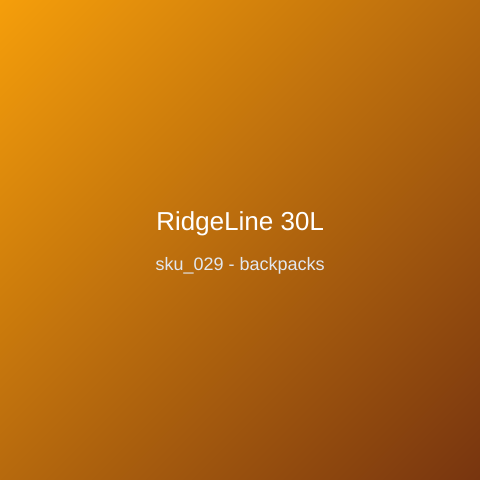

Price: ₹2,499
Trek-ready 30L backpack in ripstop nylon with rain cover stowed in the base pocket. Padded 16-inch laptop sleeve, hydration bladder sleeve with exit port, trekking-pole attachment, ventilated air-mesh back panel; 980g; whistle-buckle sternum strap; load-lifter straps pull weight off your shoulders on steep ascents; lifetime stitching guarantee.